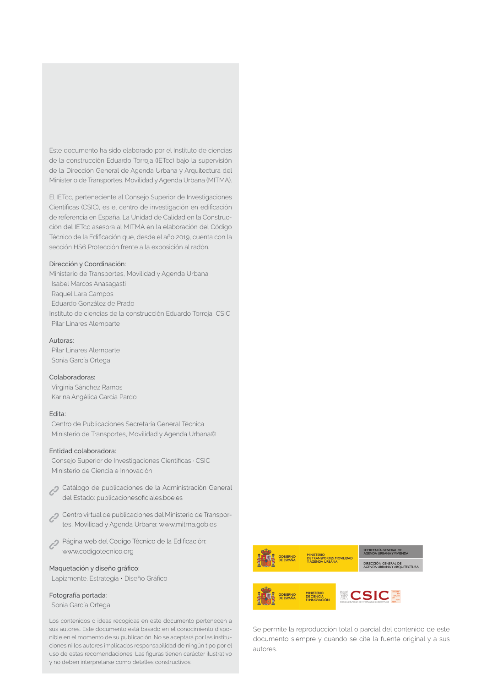

GUIA · Página 2 · versión sin-fecha
SHA256: e58e54b822cf4ab00e258f0eb50c0f06a8c04e3730a7f530d224485e2a5bb02e · página física 2 de 82 · métodos de encabezado
solo si están cotejados.
Formatos: Markdown · JSON de bloques · PDF p. 2 · imagen PNG
Página gráfica: el texto extraído puede ser parcial. Prevalece la imagen/PDF; depende de ellos.
Este documento ha sido elaborado por el Instituto de ciencias de la construcción Eduardo Torroja (IETcc) bajo la supervisión de la Dirección General de Agenda Urbana y Arquitectura del Ministerio de Transportes, Movilidad y Agenda Urbana (MITMA). El IETcc, perteneciente al Consejo Superior de Investigaciones Científicas (CSIC), es el centro de investigación en edificación de referencia en España. La Unidad de Calidad en la Construc ción del IETcc asesora al MITMA en la elaboración del Código Técnico de la Edificación que, desde el año 2019, cuenta con la sección HS6 Protección frente a la exposición al radón. Dirección y Coordinación: Ministerio de Transportes, Movilidad y Agenda Urbana Isabel Marcos Anasagasti Raquel Lara Campos Eduardo González de Prado Instituto de ciencias de la construcción Eduardo Torroja CSIC Pilar Linares Alemparte Autoras: Pilar Linares Alemparte Sonia García Ortega Colaboradoras: Virginia Sánchez Ramos Karina Angélica García Pardo Edita: Centro de Publicaciones Secretaría General Técnica Ministerio de Transportes, Movilidad y Agenda Urbana© Entidad colaboradora: Consejo Superior de Investigaciones Científicas · CSIC Ministerio de Ciencia e Innovación Catálogo de publicaciones de la Administración General del Estado: publicacionesoficiales.boe.es Centro virtual de publicaciones del Ministerio de Transpor tes, Movilidad y Agenda Urbana: www.mitma.gob.es Página web del Código Técnico de la Edificación: www.codigotecnico.org Maquetación y diseño gráfico: Lapizmente. Estrategia • Diseño Gráfico Fotografía portada: Sonia García Ortega Los contenidos o ideas recogidas en este documento pertenecen a sus autores. Este documento está basado en el conocimiento dispo nible en el momento de su publicación. No se aceptará por las institu ciones ni los autores implicados responsabilidad de ningún tipo por el uso de estas recomendaciones. Las figuras tienen carácter ilustrativo y no deben interpretarse como detalles constructivos. Se permite la reproducción total o parcial del contenido de este documento siempre y cuando se cite la fuente original y a sus autores. SECRETARÍA GENERAL DE AGENDA URBANA Y VIVIENDA DIRECCIÓN GENERAL DE AGENDA URBANAY ARQUITECTURA GOBIERNO DE ESPAÑA MINISTERIO DE TRANSPORTES, MOVILIDAD Y AGENDA URBANA GOBIERNO DE ESPAÑA MINISTERIO DE CIENCIA E INNOVACIÓN
